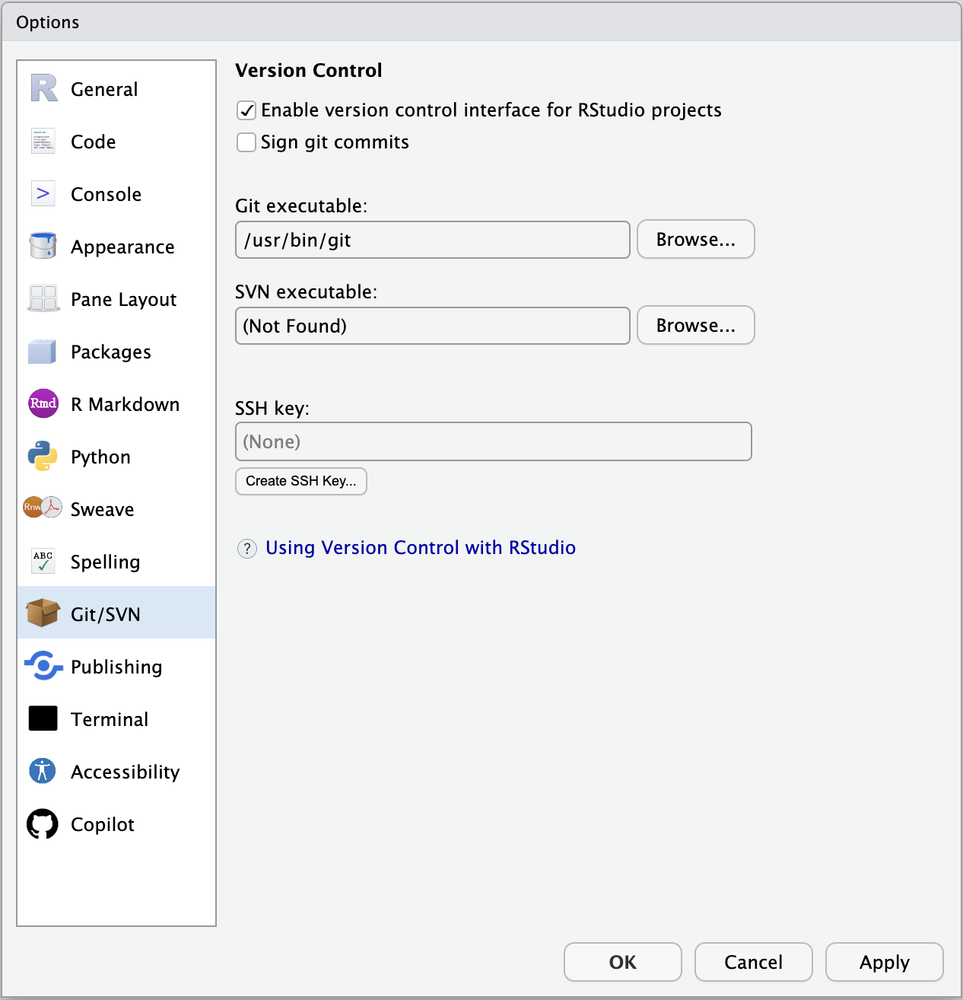
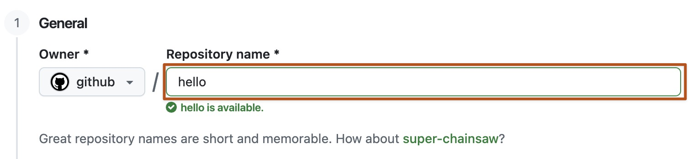

Before Session 2: prepare Git and GitHub
Install and verify; we will clone and connect the course repository together
Do not clone BIOS6301-materials or configure course remotes for this preparation. The supervised Session 2 lab begins with those steps.
1. Verify Git
The following commands are one-time setup checks, not syntax to memorize.
Open RStudio, select the Terminal tab, and run:
git --versionCopy the output. If the command is not recognized, install the current version of Git and restart RStudio.
On Windows, use the regular Git for Windows Setup installer and accept its default credential-helper option. Do not choose Portable Git for the standard course setup: portable or application-bundled Git copies may omit GCM or may not configure it for the Windows account.
2. Configure your commit identity
First, check whether Git already has an identity for you:
git config user.name
git config user.emailIf both values are present and correct, do not change them. Students with previous Git experience may already have appropriate settings.
If either value is missing or incorrect, set the default identity for new commits on this computer:
git config --global user.name "Your Name"
git config --global user.email "EMAIL_ASSOCIATED_WITH_GITHUB"Then verify the effective values:
git config user.name
git config user.emailThis is not your GitHub username, password, or login.
user.nameis normally your human-readable name.user.emailis recorded in every new commit together with your name.- GitHub can connect the commit to your account when the email is verified on that account. You may instead use the private
noreplyaddress shown under GitHub → Settings → Emails. - GitHub authentication is a separate browser sign-in covered in Step 4.
Never place a password or access token in user.name or user.email.
The --global option makes these values the default for repositories used by your computer account. A repository-specific setting can override them later. Changing the setting affects future commits; it does not rewrite earlier commits.
3. Verify RStudio can find Git
In RStudio, open Tools → Global Options → Git/SVN.
Confirm that:
- Enable version control interface for RStudio projects is checked; and
- a path appears beside Git executable.

The exact Git path depends on the operating system. The SSH-key field can remain empty because BIOS6301 uses HTTPS. Image source: Posit RStudio User Guide.
4. Prepare and check HTTPS browser authentication
This course uses HTTPS repository URLs. GitHub does not accept an ordinary account password for Git pushes. A credential helper will authenticate through GitHub in a browser and store the resulting credential securely.
You need one of the following methods, not both.
Method A: Git Credential Manager
Current Git for Windows includes Git Credential Manager (GCM), but GCM is not included with every Git installation on every operating system. Check for it:
git credential-manager --versionA successful check prints a version number. Blank output is not success. If a version is displayed, authenticate in a browser before class:
git credential-manager github login --username YOUR_GITHUB_USERNAME --browser
git credential-manager github listThe second command should list the GitHub account saved by GCM. Do not display, copy, or submit any token.
If git credential-manager is unavailable on Windows, update Git using the official Git for Windows installer and keep its default Git Credential Manager option. This includes cases where the command prints nothing. Alternatively, keep the portable Git copy and use Method B.
Method B: GitHub CLI
GitHub CLI is a supported alternative on Windows, macOS, and Linux. Install GitHub CLI and verify:
gh --versionThen authenticate through the browser and configure Git to use that login:
gh auth login --hostname github.com --git-protocol https --web
gh auth setup-git
gh auth status --active --hostname github.comWhen asked whether Git should use your GitHub credentials, answer Yes. The final command should display the active GitHub username and report that the account is logged in. Do not use the --show-token option.
There is no HTTPS username-and-password test analogous to ssh -T git@github.com. That command tests an SSH key, while this course uses HTTPS. Browser login followed by the GCM account list or gh auth status is the appropriate preparation check. The first Push to your private repository in the supervised lab remains the final end-to-end test.
If neither method is ready, bring the error message to class. You can still complete local Git work, but the course’s browser-based private Push/Pull workflow is not ready until an HTTPS credential helper is configured.
5. Create an empty private GitHub repository
Open GitHub’s new-repository page and create a private repository named BIOS6301-mywork.

Before selecting Create repository, verify:
- Visibility: Private
- Add README: Off
- Add
.gitignore: None - Choose a license: None
Do not initialize the repository with any files. We will connect the instructor history to this empty repository during the supervised lab.
Have its HTTPS URL available:
https://github.com/YOUR_GITHUB_USERNAME/BIOS6301-mywork.gitDo not paste credentials into the URL or any course file.
6. Test access to the private repository
After creating the empty private repository, run this read-only command with your username substituted:
git ls-remote https://github.com/YOUR_GITHUB_USERNAME/BIOS6301-mywork.gitCopy the command from the code block and replace only YOUR_GITHUB_USERNAME. The URL must be plain text: do not include Markdown brackets or parentheses such as [https://...](https://...).
This may open the browser sign-in prepared in Step 4. Because the repository is empty, a successful check may return to the Terminal prompt without listing any branches. No authentication error means that Git can read the private repository using the configured HTTPS helper. This command does not modify or clone the repository.
If the Terminal asks for Username and Password instead of opening a browser, press Ctrl+C. Do not enter your GitHub password: GitHub does not accept account passwords for Git operations. Return to Step 4, complete either the GCM browser login or the GitHub CLI browser login, and then retry this command.
This is the closest useful HTTPS preparation test for this course. It tests the actual private repository rather than a public URL, which would not require authentication. The supervised first Push remains the test of write access.
7. Bring this evidence to class
Have the following available to show the instructor or TA:
git --version
git config user.name
git config user.emailAlso have the empty private repository open in your browser. You may obscure part of the email address in a public discussion post.